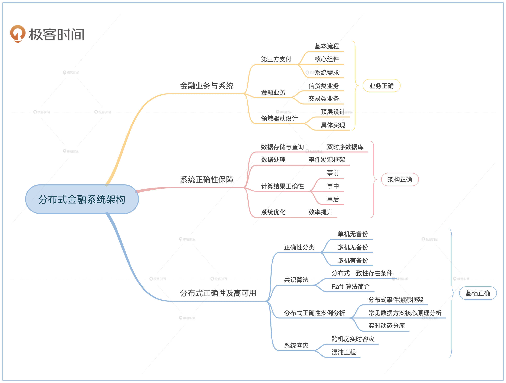

- 00 开篇词 如何成为金融级人才？.md.html
- 01 业务初探：扫了二维码之后发生了什么？.md.html
- 02 原理解读：如何理解第三方支付的业务逻辑和系统组件？.md.html
- 03 产品大观：不同金融业务都有哪些技术实现要点？.md.html
- 04 领域驱动设计（上）：如何设计金融软件顶层架构？.md.html
- 05 领域驱动设计（下）：如何设计统一的金融业务模型？.md.html
- 06 计算输入的正确性：怎么选择正确时间的数据？.md.html
- 07 计算过程的正确性：如何设计正确的数据处理架构？.md.html
- 08 计算结果的正确性：怎么保证计算结果是正确的？.md.html
- 09 数据传输的质量：金融业务对数据传输有什么要求？.md.html
- 10 数据存储的合理性：金融业务可以不用关系型数据库吗？.md.html
- 11 系统优化：如何让金融系统运行得更快？.md.html
- 12 正确性分级（上）：单机无备份有哪几种不同的一致性？.md.html
- 13 正确性分级（中）：多机无容灾有哪几种不同的一致性实现？.md.html
- 14 正确性分级（下）：多机有容灾有哪几种不同的一致性？.md.html
- 15 分布式正确性的存在性（上）：什么情况下不存在分布式共识算法？.md.html
- 16 分布式一致性（下）：怎么理解最简单的分布式一致性算法？.md.html
- 17 正确性案例（上）：如何实现分布式的事件溯源架构？.md.html
- 18 正确性案例（中）：常见分布式数据方案的设计原理是什么？.md.html
- 19 正确性案例（下）：如何在运行时进行数据系统的动态分库？.md.html
- 20 容灾（上）如何实现正确的跨机房实时容灾？.md.html
- 21 容灾（下）：如何通过混沌工程提高系统稳定性？.md.html
- 春节策划第1期 分布式金融系统知识，你掌握了多少？.md.html
- 春节策划第2期 读书如抽丝，为你推荐一些我读过的好书.md.html
- 春节策划第3期 如何运用架构知识解读春运买票和手游案例？.md.html
- 答疑集锦（一） 思考题解析与外汇架构知识拓展.md.html
- 答疑集锦（三） 思考题解析与数据库底层实现.md.html
- 答疑集锦（二） 思考题解析与账务系统优化.md.html
- 结束语 金融之道，与你同行，虽远尤欣.md.html
- 捐赠
结束语 金融之道，与你同行，虽远尤欣
你好，我是任杰。
时光荏苒，转眼间就到了我们专栏的最后一讲，感谢你的一路相伴。这个专栏自夏蝉构思，于冬雪完稿。我们常说温故而知新，因此借着最后一课，我想再给你分享一下我自己学习分布式金融系统的思路。你可以把它当作一种思维方式去借鉴，也可以作为本专栏的学习指南。
作品都需要有一条主线，专栏也不例外。乍一看，你也许觉得这个专栏内容十分繁杂。开始从金融业务切入，几讲之后便过渡到软件工程，随后是平时我们很少见到的事件溯源架构和双时序数据库，最后还补充了一些看上去和金融无关的分布式系统知识。
其实每个部分深入下去都可以有精彩之处，但我每当此时便戛然而止，马上转入下一个话题，所以这个专栏难免有一种浅尝辄止的嫌疑。其实不然。金融系统强调的是正确性，这个问题我们在专栏最初就讨论过，而正确性的定义可大可小。这个专栏虽然内容繁多，但是如果顺着正确性从大到小的主线来看，一切存在便都合理了。
还记得我们在开篇词给到的分布式金融系统全景图么？这三个部分，分别对应的是业务正确、架构正确以及基础正确这三个维度。

往小了说，金融系统的每一行代码都需完成应尽之责，恰如其分，不多不少。代码构成的组件也应该完成组件应有的功能。这些组件之间的交互在一台机器的情况下，应该具有合适的正确性。而多台机器之间的交互，也应该具有一定的正确性。那么这些基础组件的正确性如何衡量，如何实现、如何选择、如何验证，便成了一个问题。这就是基础正确。
进一步说，正确的基础工具也需要有正确的用法，否则就如烧琴煮鹤，对花啜茶。用的方式各有千秋，但也不外乎事前、事中与事后三个阶段。事前须认真遴选数据，仔细斟酌数据的时间。事中处理要处处留痕，步步小心。事后要勇于自我怀疑，三省吾身。组件于系统之中，犹如人于社会之中，需要往来交互彬彬有礼，应答有方。这就是架构正确。
往大了说，正确地做事不如做正确的事。金融系统赋能于金融业务，系统为辅，业务为主。良相贤臣的辅佐不能只是一味的阿谀奉承，而是要既知晓熙熙攘攘，又心怀诗和远方。金融业务虽纷繁复杂，但金钱如水，来往之中不生不灭，不垢不净，不增不减。金钱的融通抽象出来就是信息的传递，因此信息系统的规律需要和金融业务的规律相互契合。这就是业务正确。
总结来说，金融业务纷繁复杂，因此学习金融架构须庖丁解牛。先识大体，从复杂业务中抓取脉络。再将业务脉络变为架构原则，做到神形兼备。最后仔细雕塑，以匠人之艺成百年之业。
正是这样的思路主导，所以我在讲解过程中，有意避免过于深陷细节。内容过深，容易只见树木不见森林，在吹毛求疵的过程中慢慢迷失正确的方向。因此专栏尝试立于核心的金融业务之上，鸟瞰金融软件架构。此为其一。
计算机是一门实践科学，讲求知行合一。而近世互联网的发展逐速而不守格，但欲速则不达，知其然也知所以然方为正道。再则金融关系国计民生，可大可小。根基不稳，大厦必倾。因此斟酌再三，行文兼顾实践同时，亦重底层逻辑。此为其二。
一二之选决定了这个专栏的行文考量。若有语焉不详之处，还望指摘。金融之道，形单影只，与尔同行，虽远犹欣。
最后，我给你准备了一份毕业问卷，希望你能花两分钟填一下。非常期待你对这个专栏的评价与建议。
© 2019 - 2023 Liangliang Lee. Powered by gin and hexo-theme-book.